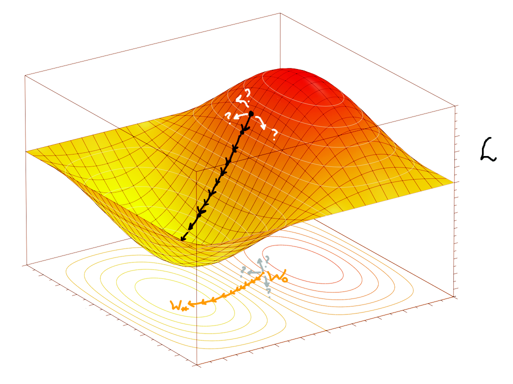

Вступ до Машинного Навчання
У цій статті я спробую пояснити доступно й українською що ж таке машинне навчання та в яких випадках його застосовують. Це не вичерпна стаття, а скоріше щось, що має допомогти читачеві опанувати теорію та розробити інтуїцію до перших методів та загального застосування машинного навчання.
Загалом, відношення між переліченими мною темами можна описати наступним чином: у нас є моделі, що навчаються виконувати якусь задачу автоматично \(\rightarrow\) ми навчаємо їх за допомогою такого математичного об'єкту як градієнт \(\rightarrow\) використовуємо наш надзвичайно ефективний алгоритм backprop, щоб швидко порахувати градієнт (про цей алгоритм ідеться в наступній нотатці). А тепер про все по порядку.
Будова моделей, що навчаються
То що ж таке ці моделі, що навчаються? Уявімо, що в нас є певна задача для програми. У загальному вигляді, маємо вхідні дані \(x\) і хочемо, щоб програма видавала певні вихідні дані \(y\). Класичний приклад: ми даємо програмі курси валют за останні декілька днів, це наш \(x\), а програма має видавати курс валют на завтра, це \(y\). Через такі приклади, \(y\) часто називають передбаченням моделі (модель тут — просто наша програма).
Ви вже можете помітити певну схожість із функціями, об'єктами шкільної програми, через ось ці ікси та ігреки. І справді, будемо розглядати всю нашу модель (тобто програму) як певну функцію \(\textcolor{darkviolet}{f}\), що перетворює \(x\) на \(y\): \[\textcolor{darkviolet}{f(}x\textcolor{darkviolet}{)} = y\]
От тільки, як можна зрозуміти з нашого прикладу, ми, як правило, гадки не маємо, як описати цю функцію, що вирішує нашу задачу. Наші \(x\) та \(y\) можуть бути якимись авдіозаписами, картинками, текстом, будь-чим, що закодовано числами. Писати такі програми вручну — просто неможливо, ці функції \(f\) бувають неймовірно складними. Для цього ми й використовуємо так зване машинне навчання: ми прописуємо в коді вручну лише загальну структуру, тобто який вигляд має \(x\), який вигляд має \(y\), і певну загальну форму функції \(f\), а конкретна робоча програма утворюється автоматично в симульованому процесі навчання. У найпростішому випадку під навчанням мається на увазі підлаштування \(f\) під певні заготовлені приклади правильної роботи. Для такого процесу нам необхідно мати дві речі: якісь "налаштування" у функції \(f\), які ми власне будемо змінювати, та заготовлені приклади правильної роботи моделі, щоб розуміти, як саме ми маємо міняти параметри.
А що ж це означає математично? Приклади роботи програми — це просто пари іксів та відповідних ігреків, які ми б вважали правильними: (\(\boldsymbol{x}_0;\boldsymbol{y}_0)\), (\(\boldsymbol{x}_1;\boldsymbol{y}_1)\),.. (\(\boldsymbol{x}_N;\boldsymbol{y}_N)\). Нагадую, що кожен \(\boldsymbol{x}_i\) та \(\boldsymbol{y}_i\) тут може бути набором чисел, для нас \(\boldsymbol{x}_i\) — це набір попередніх курсів валют, а \(y_i\) — одне число, курс валют на наступний день (зазвичай набори чисел позначають жирним шрифтом). Ці пари, як правило, беруться зі спостережень у реяльному світі, а ми очікуємо, що наша модель буде йому відповідати, тобто що для нашої функції в результаті буде виконуватися: \[f(\boldsymbol{x}_0) = \boldsymbol{y}_0\] \[f(\boldsymbol{x}_1) = \boldsymbol{y}_1\] \[...\] \[f(\boldsymbol{x}_N) = \boldsymbol{y}_N\] Загалом позначатимемо \(f(\boldsymbol{x}_i) = \boldsymbol{y}_i\). У прикладі з передбаченням курсу валют (який, до речі, є майже неможливим для реялізації, адже курси валют залежать від величезної кількости факторів окрім курсів попередніх днів) усі \(\boldsymbol{x}_i\) будуть деякими наборами однакової довжини з курсів валют попередніх днів, а відповідні \(y_i\) будуть курсами валют на наступний день. Тобто це реяльні числа, записані протягом певного часу, що мають саме ту відповідність, яку ми хочемо встановити за допомогою \(f\). Це називається набором даних (data set).
Тепер поговоримо детальніше про ці "налаштування" у функції \(f\), що їх називають вагами. По суті, це будуть параметри функції. Якщо розглядати все зовсім початково, то наведу два приклади найпростіших функцій: параметризовану та без параметра: \[y = 5x+3 \text{; — просто лінійна функція}\] \[y = \textcolor{coral}{w}x+1 \text{; — лінійна функція з параметром } \textcolor{coral}{w}\] Параметрів може буде декілька (у випадку штучних нейронних мереж їх буде дуже багато): \[f(x) = \textcolor{coral}{w}x+\textcolor{steelblue}{b} \text{; — лінійна функція з двома параметрами }\textcolor{coral}{w},\textcolor{steelblue}{b}\] Фіксуючи певні значення параметрів функції ми отримаємо непараметризовану функцію. Наприклад, зафіксувавши тут \(\textcolor{coral}{w} = 5\), \(\textcolor{steelblue}{b} = 3\), ми отримаємо нашу лінійну функцію з першого прикладу. Наша задаче буде зафіксувати такі параметри, що функція розв'язує задачу якнайкраще й помиляється якомога менше, хоча може й не ідеяльно.
Лінійна функція \(\textcolor{darkviolet}{f(}x\textcolor{darkviolet}{)} = \textcolor{darkviolet}{w}x\textcolor{darkviolet}{+b}\) була б занадто простою, щоб вирішувати сучасні задачі (не кажучи вже про те, що це просто числова функція, а навіть у нашому прикладі трохи інша ситуація). Нам потрібно більше параметрів, нелінійність та правильні розмірності \(\boldsymbol{x}\) та \(\boldsymbol{y}\). Поки що розберімося з розмірностями: у нашому прикладі \(\boldsymbol{x}\) — упорядкований набір чисел, тобто вектор з дійсних чисел, а \(y\) — одне число. Отже, наша функція має приймати вектор певної кількости чисел (розмірности) та видавати 1 число (але бувають й інші випадки). Перетворювати вектор на число чи вектор іншої довжини можна й лінійними функціями, хоча й більш складнішими. У загальному випадку, лінійна частина штучної нейронної мережі має форму

Тобто це набір лінійних зв'язків між двома шарами числових нейронів. Кожному нейрону відповідає число у векторі. Ми беремо наш вхідний вектор, і робимо декілька чисел, які групуємо у вихідний (тобто розмірність вихідного вектора обираємо потрібну). Ці числа ми робимо за допомогою параметризованих лінійних функцій, що просто комбінують всі значення вхідного вектора. Наприклад, значення нейронів вихідного шару формуватиметься як \[y_1 = \textcolor{coral}{w}_{1,1}x_1 + \textcolor{coral}{w}_{1,2}x_2 + ... + \textcolor{coral}{w}_{1,n}x_n + \textcolor{steelblue}{b}_1\] \[y_2 = \textcolor{coral}{w}_{2,1}x_1 + \textcolor{coral}{w}_{2,2}x_2 + ... + \textcolor{coral}{w}_{2,n}x_n + \textcolor{steelblue}{b}_2\] \[...\] \[y_m = \textcolor{coral}{w}_{m,1}x_1 + \textcolor{coral}{w}_{m,2}x_2 + ... + \textcolor{coral}{w}_{m,n}x_n + \textcolor{steelblue}{b}_m\] де кожне \(x_i\) — значення відповідного нейрону вхідного шару (тобто відповідний елемент у вхідному векторі). Як бачимо, для формування значення \(y_j\)нейрону під номером \(j\) наступного шару кожне значення з нейрону попереднього шару \(x_i\) множиться на якийсь параметр \(\textcolor{coral}{w}_{i,j}\) і комбінується з додатковим власним доданком \(\textcolor{steelblue}{b}_j\). Це навіяно сигналами природніх нейронів у мозку: нейрон приймає сигнали з сусідніх і формує свій сигнал, враховуючи сигнали інших з якимись коєфіцієнтами. Тобто якісь нейрони під номером \(i\) мало впливають на сигнал інших, якщо відповіний множник \(\textcolor{coral}{w}_i\) близький до нуля, а якісь навпаки сильно впливають, якщо цей множник \(\textcolor{coral}{w}_i\) великий. Параметри-множники \(\textcolor{coral}{w}_{i,j}\) називають вагами (weights) моделі, а параметри-доданки \(\textcolor{steelblue}{b}_j\) називають зміщеннями або зсувами (biases). Для всіх нейронів одного шару одночасно (себто, у векторній формі) це можна описати як \[\boldsymbol{y} = \textcolor{coral}{W}\boldsymbol{x} + \boldsymbol{\textcolor{steelblue}{b}}\] де \(\boldsymbol{x}\) — вектор "вхідної" розмірности \(n\) (відповідно й кількість вхідних нейронів), \(\boldsymbol{\textcolor{steelblue}{b}}\) — вектор параметрів "вихідної" розмірности \(m\) (скільки нейронів на виході), а \(\textcolor{coral}{W}\) — матриця параметрів (таблиця параметрів \(m \times n\)).

Наразі я не буду надто глибоко пояснювати, як працює множення матриці на вектор \(\textcolor{coral}{W}\boldsymbol{x}\), лише скажу, що геометрично результатом такої операції є збільшення/зменшення та/або поворот вектора \(\boldsymbol{x}\), тобто ці параметри \(\textcolor{coral}{W}\) впливатимуть на кут повороту та конкретний розтяг вектора. Якщо вас це заплутує, то пропустіть це. Для кращого розуміння матриць та векторів раджу продивитися найкращий візуальний вступний курс лінійної алгебри англійською (є українські субтитри на деяких відео) або шукати схожі матеріяли про лінійну алгебру українською.
Ми, як правило, будуємо певний ланцюг таких шарів з нейронів (тобто лінійних шарів), застосовуючи нелінійні функції до значення кожного нейрону після кожного шару (наприклад, якусь нелінійну функцію \(\textcolor{mediumseagreen}{\sigma}\), що називається функцією активації). Це сформує штучну нейронну мережу, тобто параметризовану функцію, що здатна вивчати складні відповідності між \(\boldsymbol{x}\) та \(\boldsymbol{y}\) — уже класичний приклад моделі, що навчається.

На малюнку 4.2: \[\boldsymbol{\textcolor{dimgrey}{h}} = \textcolor{mediumseagreen}{\sigma(}\textcolor{coral}{W}_1\boldsymbol{x} + \boldsymbol{\textcolor{steelblue}{b}}_1\textcolor{mediumseagreen}{)} \text{; — перший шар, проміжний результат}\] \[\boldsymbol{y} = \textcolor{coral}{W}_2\boldsymbol{\textcolor{dimgrey}{h}} + \boldsymbol{\textcolor{steelblue}{b}}_2 \text{; — другий шар, результат обчислень}\]
Або в один рядок \[f(\boldsymbol{x}) = \textcolor{coral}{W}_2(\textcolor{mediumseagreen}{\sigma(}\textcolor{coral}{W}_1\boldsymbol{x} + \boldsymbol{\textcolor{steelblue}{b}}_1\textcolor{mediumseagreen}{)}) + \boldsymbol{\textcolor{steelblue}{b}}_2\] А далі, після того, як ми визначилися зі структурою нашої моделі (кількістю шарів та розміром проміжних, який може бути майже довільним), наша задача зводиться до підбору правильних параметрів \(\textcolor{coral}{W}_i\) та \(\boldsymbol{\textcolor{steelblue}{b}}_i\), за яких модель помиляється найменше. Іншими словами, нам потрібно навчити нейрони звертати увагу на потрібні елементи вхідного вектору й виконувати необхідні обчислення.

Навчання градієнтним спуском
Отже, ми побудували нашу модель, визначили її архітектуру, кількість параметрів (установлюється залежно від величини та кількості внутрішніх шарів), обрали нелінійну функцію, яку застосовуємо між шарами. Питання, яке виникає далі в читача, яке виникало спочатку в мене та, сподіваюся, виникло у вас: «То як нам знайти значення цих параметрів?». Відповідаю. Початково ми ставимо всі параметри на довільні числа, тобто обираємо випадкову (чи яку хочемо) конфігурацію моделі. Можливо всі нулі, можливо всі одиниці, можливо просто якісь різні випадкові числа від 0 до 1 (так частіше за все й роблять), але якось заповнюємо параметри \(\textcolor{coral}{W}\) та \(\boldsymbol{\textcolor{steelblue}{b}}\). Чи буде така модель правильною? Ну, тільки якщо нам одразу повезе підібрати такі параметри, але нам наразі просто треба з чогось почати. Коли ми маємо бодай якусь модель, ми вже можемо її випробувати на нашому наборі даних. А далі ми будемо покращувати модель за допомогою навчання, повторюючи процес навчання багато разів, тому початкові параметри нас не дуже цікавлять (ну, майже).
Для процесу навчання нам необхідно оцінювати, наскільки неправильно працює модель за наших параметрів і намагатися змінити параметри так, щоб мінімізувати похибку роботи моделі. Спочатку похибка буде величезною, бо наша параметризована функція ніяк не підлаштована до нашої задачі й множить якісь випадкові числа на наші вхідні дані. Однак, за допомогою так званого методу градієнтного спуску ми будемо поступово, крок за кроком, покращувати параметри. Подивимося, як оцінювати похибку моделі. По-перше, ми розглядаємо нашу модель як деяку функцію, яка залежить від параметрів \(\textcolor{coral}{W}\) та \(\boldsymbol{\textcolor{steelblue}{b}}\): \[\hat{\boldsymbol{\textcolor{darkgoldenrod}{y}}} = f(\boldsymbol{x}; \textcolor{coral}{W}, \boldsymbol{\textcolor{steelblue}{b}})\] де \(\hat{\boldsymbol{\textcolor{darkgoldenrod}{y}}}\) — передбачення моделі для \(\boldsymbol{x}\) за заданих параметрів \(\textcolor{coral}{W}, \boldsymbol{\textcolor{steelblue}{b}}\). По-друге, нагадаю, що в нас є певний набір правильних (бажаних) результатів роботи моделі (\(\boldsymbol{x}_0;\boldsymbol{y}_0)\), (\(\boldsymbol{x}_1;\boldsymbol{y}_1)\),.. (\(\boldsymbol{x}_N;\boldsymbol{y}_N)\), під який ми підлаштовуватимемо модель. Тобто бажаний результат – знайти такі набори параметрів \(W*\), \(\boldsymbol{b}*\), що для кожної пари прикладів ікса та ігрека виконуватиметься: \[\boldsymbol{y}_i \approx \hat{\boldsymbol{\textcolor{darkgoldenrod}{y}}}_i\] Тобто правильний ігрек приблизно дорівнює відповідному передбаченню моделі. Підставивши до визначення \(\hat{\boldsymbol{\textcolor{darkgoldenrod}{y}}}\) наші фіксовані параметри \(W*\), \(\boldsymbol{b}*\) отримаємо, що \[\boldsymbol{y}_i \approx \textcolor{darkgoldenrod}{f(}\boldsymbol{x}_i\textcolor{darkgoldenrod}{; W*, \boldsymbol{b}*)}\] тоді \[\boldsymbol{y}_i - \textcolor{darkgoldenrod}{f(}\boldsymbol{x}_i\textcolor{darkgoldenrod}{; W*, \boldsymbol{b}*)} \approx \boldsymbol{0}\] тоді також \[||\boldsymbol{y}_i - \textcolor{darkgoldenrod}{f(}\boldsymbol{x}_i\textcolor{darkgoldenrod}{; W*, \boldsymbol{b}*)}|| \approx 0\] Тут ми беремо модуль (точніше, норму, але я поки це проігнорую), щоб позначити, що нам не важливо, в якому напрямку відхилення (умовно, чи наша модель перебільшує чи применшує), але важливо позначити різницю між тим, що видала модель для нашого \(\boldsymbol{x}_i\) та значенням з прикладу \(\boldsymbol{y}_i\).
Насправді ми щойно майже те й зробили, що оцінили похибку. Проблема лиш у тому, що ми оцінили похибку лише для окремої пари (\(\boldsymbol{x}_i;\boldsymbol{y}_i)\) та конкретних параметрів \(W*\), \(\boldsymbol{b}*\), ось ця похибка: \(||\boldsymbol{y}_i - f(\boldsymbol{x}_i; W*, \boldsymbol{b}*)||\). Справді, це невід'ємне число, що дорівнює 0 лише коли наша модель НЕ помилилася, а інакше характеризує, наскільки ж помилилася, тобто відхилилася від правильної відповіді \(\boldsymbol{y}_i\), наша модель. Це можна перезаписати для довільних параметрів \(\textcolor{coral}{W}\), \(\boldsymbol{\textcolor{steelblue}{b}}\) також як \(||\boldsymbol{y}_i - \hat{\boldsymbol{\textcolor{darkgoldenrod}{y}}}_i||\), бо \(\hat{\boldsymbol{\textcolor{darkgoldenrod}{y}}} = f(\boldsymbol{x}; \textcolor{coral}{W}, \boldsymbol{\textcolor{steelblue}{b}})\), тобто це відстань між тим, що передбачила модель та правильним значенням із прикладу. Повна похибка для певного набору параметрів \(\textcolor{coral}{W}\), \(\boldsymbol{\textcolor{steelblue}{b}}\) буде просто середнім з похибок на всіх парах прикладів: \[\frac{||\boldsymbol{y}_0 - \hat{\boldsymbol{\textcolor{darkgoldenrod}{y}}}_0|| + ||\boldsymbol{y}_1 - \hat{\boldsymbol{\textcolor{darkgoldenrod}{y}}}_1|| + ... + ||\boldsymbol{y}_N - \hat{\boldsymbol{\textcolor{darkgoldenrod}{y}}}_N||}{N+1}\] Або, підставивши знову \(\hat{\boldsymbol{\textcolor{darkgoldenrod}{y}}} = f(\boldsymbol{x}; \textcolor{coral}{W}, \boldsymbol{\textcolor{steelblue}{b}})\), \[\frac{||\boldsymbol{y}_0 - f(\boldsymbol{x}_0; \textcolor{coral}{W}, \boldsymbol{\textcolor{steelblue}{b}})|| + ||\boldsymbol{y}_1 - f(\boldsymbol{x}_1; \textcolor{coral}{W}, \boldsymbol{\textcolor{steelblue}{b}})|| + ... + ||\boldsymbol{y}_N - f(\boldsymbol{x}_N; \textcolor{coral}{W}, \boldsymbol{\textcolor{steelblue}{b}})||}{N+1}\] Враховуючи, що дріб залежить лише від параметрів \(\textcolor{coral}{W}\) та \(\boldsymbol{\textcolor{steelblue}{b}}\) (все інше в дробі - фіксовані величини) і по суті оцінює середню похибку на них, можемо визначити функцію: \[L(\textcolor{coral}{W}, \boldsymbol{\textcolor{steelblue}{b}}) = \frac{||\boldsymbol{y}_0 - f(\boldsymbol{x}_0; \textcolor{coral}{W}, \boldsymbol{\textcolor{steelblue}{b}})|| + ||\boldsymbol{y}_1 - f(\boldsymbol{x}_1; \textcolor{coral}{W}, \boldsymbol{\textcolor{steelblue}{b}})|| + ... + ||\boldsymbol{y}_N - f(\boldsymbol{x}_N; \textcolor{coral}{W}, \boldsymbol{\textcolor{steelblue}{b}})||}{N+1}\] Цю функцію, що рахує похибку за певних параметрів, називають функцією втрат. Саме ця функція витрат називається середнє абсолютне відхилення, тобто середнє з модулів відхилень. Функцію втрат можна визначати й в інші способи, проте сенс один: ми маємо знайти такі параметри, щоб її значення було близьким до мінімального (тобто мінімізувати її). Для простоти, щоб не розглядати її як функцію від двох змінних, знехтуємо параметрами \(\boldsymbol{\textcolor{steelblue}{b}}\), отримавши певну функцію \(L(\textcolor{coral}{W})\) (все одно \(\textcolor{coral}{W}\) — набір з параметрів, а не один, просто вважаймо, що \(\textcolor{coral}{W}\) тепер — усі параметри разом).
Далі застосуймо градієнтний спуск до \(L(W)\), щоб знайти її мінімум. Для чого нам якісь складні алгоритми? От подумайте, чи зможете ви вручну підібрати мінімум для нелінійної функції з 50 параметрів? У задачах машинного навчання ми ніколи не знаємо де саме в просторі можливих параметрів знаходяться оптимальні для нашої задачі, бо простір цей величезний, а задачі дуже складні. Як же працює цей чудовий метод? На щастя, тут є красива графічно зрозуміла частина та інтуїтивна ідея.
Розглянемо якийсь ілюстративний графік \(L(W)\). У неї чітко видно мінімум, тобто оптимальний для нас набір параметрів. Нашу початкову випадкову здогадку про параметри відмічено стрілочкою, позначимо ці параметри \(W_0\), відповідно похибка на цьому наборі параметрів буде \(L(W_0)\).
Принцип роботи градієнтного спуску дуже простий: ми стоїмо в якійсь точці на схилястій поверхні (для нас це \(W_0\)) й хочемо спуститися якомога нижче. Робитимемо один крок у напрямку найбільш похилого спуску, щоб опинитися одразу якнайнижче. Опиняємося після кроку в новій точці, з якої повторюємо процес. Повторюємо купу разів або допоки не досягли достатньо низької точки. На графіку це виглядатиме так:
У нашій одновимірній ілюстрації є лише два напрямки: праворуч та ліворуч, тому ситуація трохи спрощуєься. З нашої точки, щоб спускатися кривою похибки, ми рухатимемо параметри лише праворуч. Крок параметру намальовано помаранчевим.
Утім, навіть у двовимірному випадку (а як правило в нас дуже багато параметрів \(W\)), кількість можливих напрямків для кроку стає неперераховною, а треба знайти оптимальний напрямок. Просто для прикладу, схилясту поверхню функції \(L(W)\) у двох вимірах (а також спуск з якоїсь її точки) можна уявити так:
Тут також проілюстровано проблему вибору напрямку найкрутішого спуску. Для її вирішення та фінального формального й математичного опису алгоритму повернімося в наш одновимірний приклад. Як зрозуміти з цієї точки, у який бік (праворуч чи ліворуч) буде спуск? Зі шкільної програми (у теорії) знаємо про таку чудову річ як похідна! Формально, похідна — це тангенс кута нахилу дотичної прямої до графіку функції в цій точці. Для нас тут важливо те, що це число, що характеризує кут нахилу. Якщо похідна в цій точці додатна — функція зростає, отже для спуску треба робити крок ліворуч. Якщо від'ємна — функція спадає, отже треба робити крок праворуч. Припускаємо, що для нашої функції похідна існує й усе добре.
На малюнку 9 є приклади точок із різним знаком похідної та показано напрямок, у якому ми б рухали параметри вниз відносно цих точок. Тепер опишемо правило кроку градієнтного спуску математично, за допомогою формули. Формула буде задавати, як саме ми маємо змінити \(W\) далі. От знаходимося ми на якійсь точці \(W_n\), десь посередині алгоритму і хочемо дізнатися наступну точку \(W_{n+1}\), яка буде (нам би так хотілося) оптимальніше поточної. Отже, задача: виразити \(W_{n+1}\) через \(W_n\), щоб дізнатися наступну точку, знаючи поточну. У який бік ми маємо рухатися відносно точки \(W_n\)? Як ми виявили, у протилежний до знаку похідної! Нагадую: додатна похідна — рухаємося ліворуч, тобто віднімаємо якийсь крок; від'ємна похідна — рухаємося праворуч, тобто додаємо якийсь крок. Тоді похідна \(L'(W_n)\) функції втрат у точці \(W_n\) має входити до формули з протилежним знаком (доставляємо мінус). Виходить: \[W_{n+1} = W_n - \textcolor{firebrick}{\alpha} L'(W_n)\] де \(\textcolor{firebrick}{\alpha} > 0\) — число, що задає крок. Зазначу, що крок не буде дорівнювати \(\textcolor{firebrick}{\alpha}\), але більше \(\textcolor{firebrick}{\alpha}\) — більший крок. Як правило, ми беремо дуже мале альфа, щоб не пропустити наш мінімум, але не надто мале, щоб не довго йти.
Тепер ми знаємо, як спускатися в одновимірному випадку (припустимо \(\textcolor{firebrick}{\alpha}=0.01\)): починаємо з випадкової першої точки (параметру) \(W_0\) і проганяємо формулу, отримуючи кращі точки (параметри): \[W_1 = W_0 - \textcolor{firebrick}{0.01} L'(W_0)\] \[W_2 = W_1 - \textcolor{firebrick}{0.01} L'(W_1)\] \[...\] У такому одновимірному випадку похідну в кожній точці можна шукати на комп'ютері приблизно за означенням, за формулою \(L'(W_n) \approx \frac{L(W_n+h) - L(W_n)}{h}\) при дуже малих і близьких до нуля (але не саме нульових) значеннях \(h\), але в цій статті ми про це говорити не будемо. Вважайте, що це для особливо допитливих.
У нас має виникнути два питання: чи змінюється формула в реальних багатовимірних задачах і чому спуск градієнтний? Відповідь одна — формула змінюється, але не сильно: похідна стає градієнтом, певним узагальненням похідної. Позначатимемо його (градієнт \(L\) у точці \(W_n\)) так: \(\nabla L(W_n)\). Отже загальна формула: \[W_{n+1} = W_n - \textcolor{firebrick}{\alpha} \nabla L(W_n)\] Градієнт — це векторний аналог похідної. Простими словами, він показує нам той самий напрямок, що й похідна в одновимірному просторі, тому його теж треба брати з мінусом. Обчислювати градієнт можна різними способами, найрозвинутіший метод, що дозволив узагалі весь подальший розвиток машинного навчання — це алгоритм зворотного поширення помилки.
Трохи поясню, що таке цей градієнт у невеличкому відступі. Це знадобиться для вирішення завдань наприкінці сторінки, а також для розуміння наступної статті про алгоритм зворотного поширення помилки. Якщо коротко, то градієнт — це вектор з купи частинних похідних. Ми беремо окремі похідні за всіма змінними функції по порядку, а потім групуємо їх у єдиний об'єкт у потрібному порядку.
Наприклад, візьмімо функцію трьох змінних \[F(\textcolor{blueviolet}{x}, \textcolor{chocolate}{y}, \textcolor{green}{z}) = \textcolor{blueviolet}{x}^2 + 5\textcolor{chocolate}{y}\textcolor{blueviolet}{x} - \textcolor{green}{z}\] та порахуємо градієнт \(\nabla F\). Порахуємо частинні похідні від усіх трьох змінних: \[\frac{\partial F}{\partial \textcolor{blueviolet}{x}} = 2\textcolor{blueviolet}{x} + 5\textcolor{chocolate}{y} - 0\] \[\frac{\partial F}{\partial \textcolor{chocolate}{y}} = 0 + 5\textcolor{blueviolet}{x} - 0\] \[\frac{\partial F}{\partial \textcolor{green}{z}} = 0 + 0 -1\] Рахуючи похідну за певною змінною ми просто вважаємо всі інші сталими (константами) й беремо похідні. Згадайте шкільні похідні, якщо не пам'ятаєте, чому похідна за \(\textcolor{blueviolet}{x}\) від \(\textcolor{blueviolet}{x}^2\) це \(2\textcolor{blueviolet}{x}\).
Порядок наших змінних був \((\textcolor{blueviolet}{x}, \textcolor{chocolate}{y}, \textcolor{green}{z})\), отже в градієнті збережемо той самий порядок (тільки перепишемо в стовпчик для читабельности): \[\nabla F(\textcolor{blueviolet}{x}, \textcolor{chocolate}{y}, \textcolor{green}{z}) = \left(\frac{\partial F}{\partial \textcolor{blueviolet}{x}}, \frac{\partial F}{\partial \textcolor{chocolate}{y}}, \frac{\partial F}{\partial \textcolor{green}{z}} \right) = \left( \begin{array}{c} 2\textcolor{blueviolet}{x} + 5\textcolor{chocolate}{y} \\ 5\textcolor{blueviolet}{x} \\ -1 \end{array} \right). \]
Порахуймо тепер градієнт від \(F\) у конкретній точці \((7, 0, 11)\), підставимо \[\nabla F(\textcolor{blueviolet}{7}, \textcolor{chocolate}{0}, \textcolor{green}{11}) = \left( \begin{array}{c} 2 \cdot \textcolor{blueviolet}{7} + 5 \cdot\textcolor{chocolate}{0} \\ 5 \cdot \textcolor{blueviolet}{7} \\ -1 \end{array} \right) = \left( \begin{array}{c} 14 \\ 35 \\ -1 \end{array} \right).\]
Аналогічно, для функції втрат \(L(W)\), її градієнт буде просто певною конструкцією з похідних за всіма параметрами, які ми сховали під позначенням \(W\). Градієнт буде мати точно таку саму форму як і саме \(W\), бо на кожен елемент по похідній і структуру ми зберігаємо.
Іще зазначу, що в градієнтного спуску є певні мінуси як у метода оптимізації. Він не гарантовано знаходить найкращий, глобальний, мінімум, тобто може застрягти не в тому місці, якщо нам не пощастить із початковою точкою:
Ось, наприклад, у нашому прикладі \(L(W)\) є така інша точка \(W_0\), почавши з якої ми теоретично й дійдемо до певного мінімуму \(W*\), але це буде локальний мінімум, тобто, як бачимо, помилятися там наша модель ще буде дуже сильно (\(L(W*)\) знаходиться доволі високо). Із точки \(W*\) градієнтний спуск уже нікуди не піде, бо будь-який крок звідти — крок угору, а він може лише спускатися (бо це ж спуск). Математично це пояснюється тим, що похідна (градієнт) у тій точці буде нульова.
Завдання для практики
Пропоную деякі практичні задачі для кращого розуміння матеріялу статті. Їх відсортовано за зростанням складности. Не переживайте, якщо задачі здаються складними на початку, насправді код простіше, ніж ви думаєте.
1. Припустімо, що в нас є функція \(v(t)\), яка задає надлишкові витрати нашої компанії залежно від певного параметру \(t\). Напишіть програму, що знаходить мінімум цієї функції (тобто значення параметру, за якого зайві витрати мінімальні) \[v(t) = \frac{t^4-(t+3)^2+(t-2)^3-2t+10}{11}+2\cos t\] за допомогою градієнтного спуску з параметром \(\alpha=0.01\), починаючи з точки \(t_0=-3.7\). Кількість кроків підберіть необхідну самостійно (спочатку спробуйте 100). Зверніть увагу, що тут наша функція, що мінімізується — це \(v\), а мінімізуємо ми її за \(t\). Похідну рахуйте за формулою \(v'(t) \approx \frac{v(t+h) - v(t)}{h}\), можна вибрати \(h=0.001\).
Чи зміниться результат, якщо поставити початкову точку \(t_0=1\)? Поясніть поведінку алгоритму в такому випадку.
2. Напишіть програму, що за допомогою градієнтного спуску за параметром \(w\) підлаштовуватиме параметризовану функцію вигляду \(f(x; w) = wx+w\) під наступний набір даних: \[(1;2), (5.3;6), (3;4.1)\] Так, ці точки не знаходяться на одній прямій, а функцію підставляти доведеться лінійну, але дані рідко ідеяльні, а наша модель ніколи не описуватиме реяльний світ повністю.
Вказівки:
Похідну від похибки рахуйте за формулою \(L'(w) \approx \frac{L(w+h) - L(w)}{h}\), можна вибрати \(h=0.001\).
Початкове значення \(w\) оберіть випадково або поставте \(w=-2\).
Кількість кроків градієнтного спуску залежить від параметру \(\alpha\), але раджу поставити 100 кроків та подивитися результат (вивести значення похибки, має бути близьке до нуля, або намалювати графік, що має майже проходити через задані три точки).
Також раджу на кожному кроці або виводити похибку або малювати графік функції, щоб краще зрозуміти процес підлаштування функції під набір точок (даних).
По секрету скажу, що для лінійної моделі (як у цій задачі) не потрібно й градієнтного спуску, але нас цікавить саме цей спосіб.
3. Напишіть програму, що за допомогою градієнтного спуску за параметрами \(\boldsymbol{w} = (w_0, w_1, w_2)\) підлаштовуватиме параметризовану функцію вигляду \(f(x; \boldsymbol{w}) = w_0+w_1x+w_2x^2\) під наступний набір даних: \[(-3.95;0), (2;1.1), (-1;3.2)\] Ця задача схожа на попередню, але тут функція має вже 3 параметри та не є лінійною. Через те, що параметрів аж 3 доведеться рахувати градієнт, але нагадаю, що це просто вектор, що складається з окремих похідних за кожним параметром, які можна рахувати так само.
Вказівки: Частинна похідна за \(\textcolor{coral}{w_1}\) від функції трьох змінних \((w_0, \textcolor{coral}{w_1}, w_2)\) може бути приблизно порахована за аналогією до попередніх задач як \[\frac{\partial L}{\partial \textcolor{coral}{w_1}}(w_0, \textcolor{coral}{w_1}, w_2) \approx \frac{L(w_0, \textcolor{coral}{w_1 + h}, w_2) - L(w_0, \textcolor{coral}{w_1}, w_2)}{h}\]
Також дивіться вказівки до попередньої задачі.
4. Напишіть програму, яка оцінює вартість будинку за допомогою моделі, що навчається. Ось дані для тренування у форматі: \[(\text{Площа}; \text{ Ціна}\$)\]
\[(1710; 208500)\]
\[(1262; 181500)\]
\[(1786; 223500)\]
\[(1717; 140000)\]
\[(2198; 250000)\]
\[(1647; 175000)\]
\[(2073; 210000)\]
\[(2340; 266500)\]
\[(1078; 142125)\]
\[(1256; 147500)\]
Оцініть натренованою моделлю вартість будинків із житловою площею 1000 та 1801 (футів квадратних, хоча одиниці вимірювання не важливі).
Вказівка: структуру моделі можна обрати як із задачі 3, так і свою. Лінійна модель (але не така як у другій задачі, а з двома різними параметрами) тут також підійде.